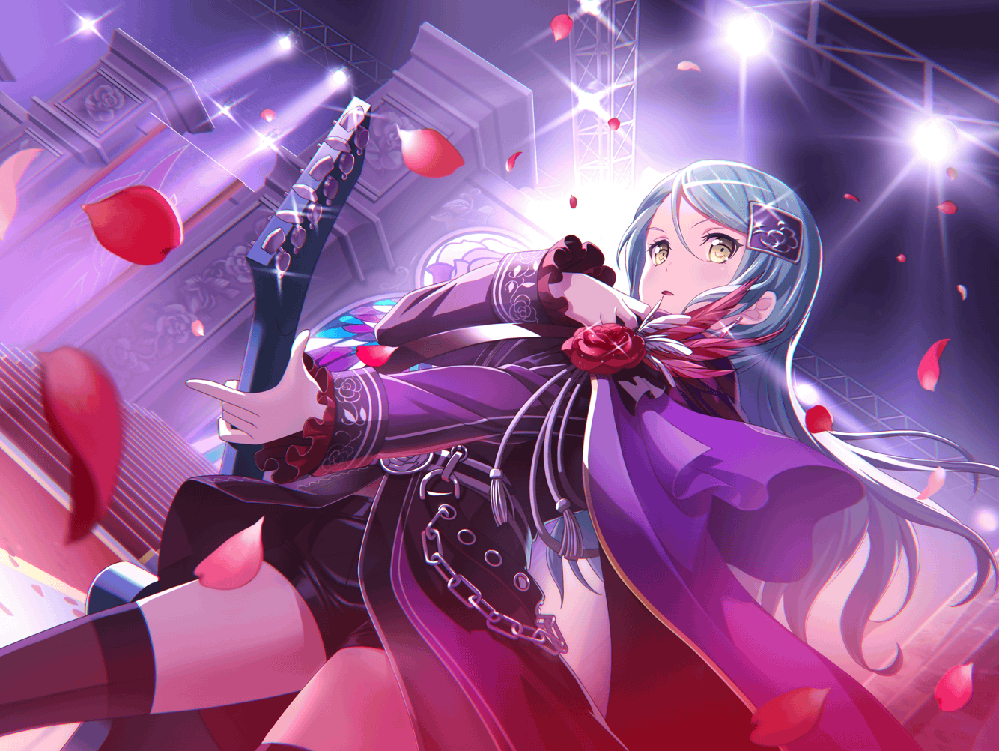

紗夜
……私達、ここまで来たのね
紗夜
思い出してみると……長い道のりだったわ
紗夜
……でも、不思議と悪い気はしない
紗夜
ただ、ここで気を抜いては駄目……
紗夜
私達が目指すべき先は、もっと高みなのだから
紗夜
私や湊さんが、
みんなを引っ張って行かないと……
紗夜
……ふぅ。
とりあえず控え室に戻って、
ギターのチューニングをしようかしら
紗夜
……あら？
紗夜
{{userName}}さん、お疲れ様です
紗夜
お仕事中にどうしたんですか？
紗夜
……私がステージを見てたから気になった、ですか？
紗夜
そうですか……心配をおかけしてすみません
紗夜
でも、大丈夫です。
なんでもありませんよ
紗夜
ただ、少し……気持ちを整理してただけです
紗夜
これからライブがあるのに、
余計な考えごとはいらないですから……
紗夜
……気持ちの整理はうまくいったのか？
紗夜
そう、ですね……
１つを除いては、大丈夫だと思います
紗夜
……私の話、聞いてくれるんですか？
紗夜
ありがとうございます……
紗夜
知っていると思いますが、
私には、妹がいるんです
紗夜
妹と言っても、双子なので、
私がたまたま早く生まれたってだけなんですけど
紗夜
妹は……全てにおいて、私より才能があります
紗夜
私が先に始めても、
私がそれまでに努力して積み上げてきたものを全部、
あの子は才能だけで飛び越えて行ってしまうんです
紗夜
……昔から、あの子は私の真似ばかりして、
すぐに私よりも上手くなってしまう
紗夜
それが嫌で……真似されたものを次々とやめていって……
そして、私の元には、ギターだけが残りました
紗夜
そんな時に、湊さんに出会い、
一緒にバンドを組むことになりました
紗夜
そこから、今井さんや宇田川さん……
その時は、白金さんはまだでしたね
紗夜
とにかく、私と湊さんの他にもメンバーが増えたあの日、
私は家でフェスについて調べていました
紗夜
そうしたら、妹が近寄ってきて
私に何をしているかを聞いてきたんです
紗夜
先ほども言いましたが、
あの子は、すぐに私の真似をしたがります……
紗夜
危機感……だったんでしょうね
紗夜
このままギターまで真似されたら、
バンドや、フェスの事を知られたら……
私の元から何もなくなってしまう
紗夜
そう思った瞬間……
私は妹を拒絶していました
紗夜
……最低ですよね。
自分の保身のためだけに拒絶して。
妹に、あんな悲しそうな表情をさせて……
紗夜
でも……妹にそんな顔をさせたことに、
罪悪感はありますけど……
紗夜
申し訳なく思いますけど……
あの時に、もしも、あの危機感を抱いていなかったら……
紗夜
いえ、あの時に危機感を覚えたからこそ、
私は音楽で……フェスで頂点を取るという決意を、
改めてすることができたんです
紗夜
……変な話ですけどね
紗夜
だから、ある意味、妹のおかげだと思うんです
紗夜
こうして今も私が、ギターに全てを注いでいるのは
紗夜
大げさかもしれませんが、
あの子のおかげで今の私がいる……そう思うんです
紗夜
……{{userName}}さん。
妹に最低なことをしたのに、
こう思ってしまう私は変でしょうか？
紗夜
未だに妹に謝ってない私は……最低でしょうか？
紗夜
……わからない、ですか？
紗夜
ただ、誰だって自分が積み重ねてきたものを一瞬で崩されるのは、
嫌だと思う……？
紗夜
そう、ですか……
紗夜
ありがとうございます
紗夜
{{userName}}さんのおかげで、
少しだけ気持ちの整理ができそうです
紗夜
……それでは、そろそろリハーサルの時間なので、
失礼します
紗夜
{{userName}}さん、話を聞いてくれてありがとうございます
紗夜
……ふふ。
さっきから私、お礼を言ってばかりですね
紗夜
……え？
がんばれ……ですか
紗夜
……はい
紗夜
それでは、本当にそろそろ……
紗夜
頑張って、きます